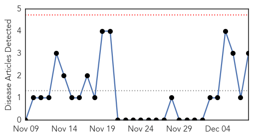

MERS
30-Day Web Trend
0 alerts, 0 warnings
30-Day Twitter Trend
0 alerts, 0 warnings

Article Locations

Article Confidences

Top Articles:
Top Tweets:
- 0.772
- RT: Synthesizing data and models for the spread of MERS-CoV, 2013: Key role of index cases and hospital transmission http://…
- 0.724
- Synthesizing data and models for the spread of MERS-CoV, 2013: Key role of index cases and hospital transmission http://t.co/LkZKBJ7TXK
Pertussis
30-Day Web Trend
0 alerts, 0 warnings

30-Day Twitter Trend
0 alerts, 0 warnings

Article Locations

Article Confidences

Top Articles:
Top Tweets:
-
No tweets found for Dec 08, 2014